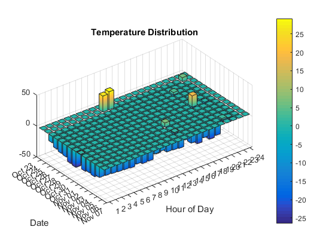
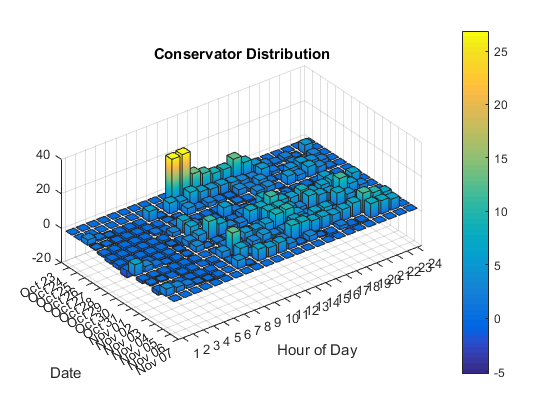

readChannelID = 56612;
dateRange = [datetime('24-Oct-2016'),datetime('today')];
[data,time,channelInfo] = thingSpeakRead(readChannelID,'Fields',1:8,'DateRange',dateRange);
temperatureData = data(:,6);
humidityData = data(:,7);
pressureData = data(:,3);
rainData = data(:,4);
windSpeedData = data(:,5);
windGustData = data(:,6);
windDirectionData = data(:,7);
dayRange = day(dateRange(1):dateRange(2));
weatherData = zeros(length(dayRange),24);
for m = 1:length(dayRange)
for n = 1:24
if any(day(time)==dayRange(m) & hour(time)==n);
hourlyData = temperatureData((day(time)==dayRange(m) & hour(time)==n));
weatherData(m,n) = hourlyData(1);
end
end
end
figure
h = bar3(datenum(dateRange(1):dateRange(2)), weatherData);
for k = 1:length(h)
h(k).CData = h(k).ZData;
h(k).FaceColor = 'interp';
end
title('Temperature Distribution')
xlabel('Hour of Day')
ylabel('Date')
datetick('y','mmm dd')
ax = gca;
ax.XTick = 1:24;
ax.YTickLabelRotation = 30;
colorbar
for m = 1:length(dayRange)
for n = 1:24
if any(day(time)==dayRange(m) & hour(time)==n);
hourlyData = humidityData((day(time)==dayRange(m) & hour(time)==n));
weatherData(m,n) = hourlyData(1);
end
end
end
figure
h = bar3(datenum(dateRange(1):dateRange(2)), weatherData);
for k = 1:length(h)
h(k).CData = h(k).ZData;
h(k).FaceColor = 'interp';
end
title('Conservator Distribution')
xlabel('Hour of Day')
ylabel('Date')
datetick('y','mmm dd')
ax = gca;
ax.XTick = 1:24;
ax.YTickLabelRotation = 30;
colorbar
Warning: Non-numeric data was found. This could mean that you are attempting to
retrieve data from a channel or field that has non-numeric points. Set
'OutputFormat' property to 'table' or 'timetable' to read non-numeric data.
 